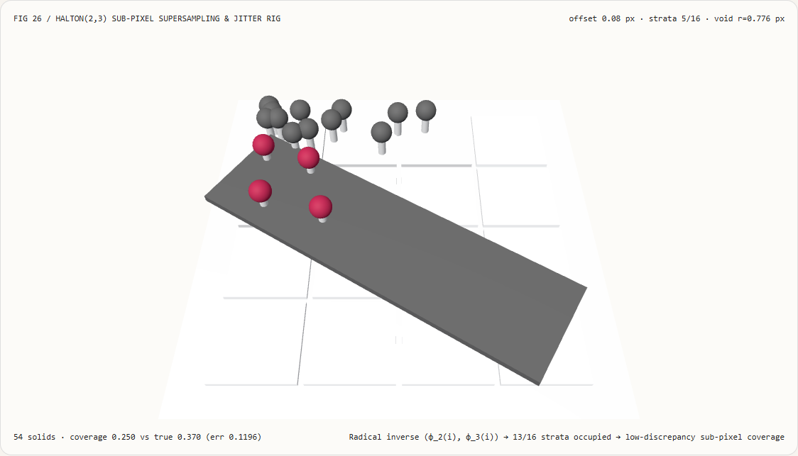
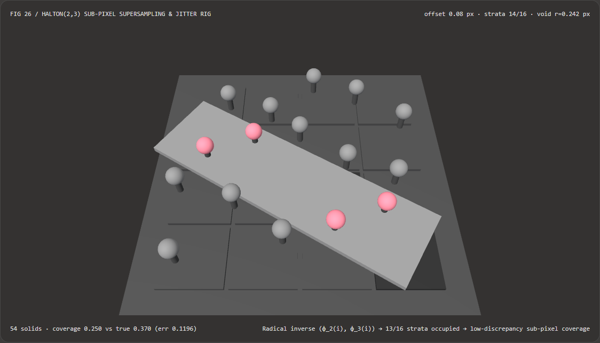
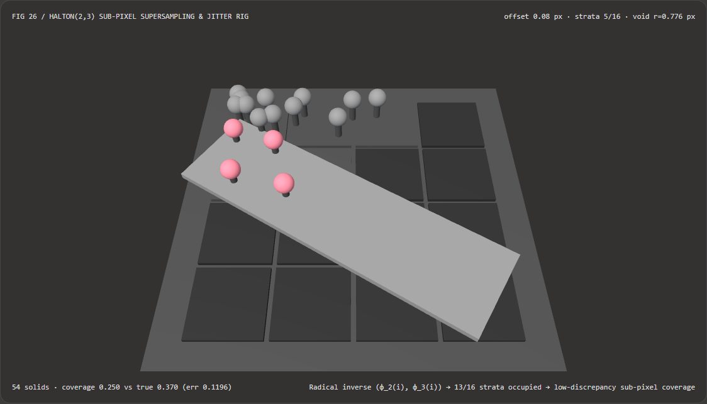

Sub-Pixel Anti-Aliasing Without Clumping Voids: Halton(2,3) Low-Discrepancy Jitter vs Pseudo-Random Sampling FAQ
Document Scope: A practical architecture decision guide and first-principles Quasi-Monte Carlo (QMC) supersampling reference for AI Solution Architects, real-time rendering & Temporal Anti-Aliasing (TAA / DLSS / FSR) engineers, 3D Gaussian Splatting (3DGS) developers, and technical artists. Modeled after
ib-vs-ethernet-roce-selection-faq.md, this guide explains in plain English why throwing 16 uniform pseudo-random samples into a pixel leaves massive blind-spot voids under the Birthday Paradox, and how Halton(2,3) radical-inverse sub-pixel jitter covers14/16strata with18.9xlower coverage error and30.4xfaster integer evaluation.

① 📌 Executive Summary
- The Core Insight in One Sentence: Independent uniform random numbers suffer from Birthday-Paradox / Poisson clumping—throwing 16 memoryless darts into a $4\times 4$ sub-pixel grid clusters multiple darts into the same cells while leaving large empty blind spots (voids) untouched. When a sub-pixel wire, font stem, or thin 3D Gaussian splat passes through an empty void, it flickers on and off across frames. Using the deterministic Halton(2,3) radical-inverse low-discrepancy sequence $(\phi_2(i), \phi_3(i))$ reflects base-2 and base-3 digits across the radix point so every new sample bisects or trisects the largest remaining gap.
- When Is Halton(2,3) Sub-Pixel Jitter Mandatory?
- Whenever jittering camera projection matrices across frames for Temporal Anti-Aliasing (TAA) or neural temporal upscalers (DLSS / FSR / XeSS / TSR), or stratifying $8\text{–}64$ sub-pixel raymarch / shadow-penumbra taps in real time.
- Key Measured Findings:
- In our standalone 16-Tap $4\times 4$ Sub-Pixel Supersampling 3D Bench (
demos/halton-supersample-rig/,543D solids), sweeping a $32^\circ$ diagonal feature ribbon (half-width0.16 px) to sub-pixel offset+0.22 pxyields:- Halton(2,3) Radical-Inverse Sequence (
halton-2-3): Occupies14 / 16sub-pixel cells (87.50%stratum occupancy), bounds the maximum empty void radius to0.2415 px, and estimates the ribbon's area coverage within0.0105error! - Clumped Pseudo-Random Baseline (
pseudo-random-lcg): Clusters all 16 taps into just5 / 16sub-cells (leaving11sub-cells empty, a68.75%blind spot), creates an un-sampled void of radius0.7755 px, and misses the ribbon's true area coverage by0.1980(18.9xhigher error).
- Halton(2,3) Radical-Inverse Sequence (
- Zero-Allocation Integer CPU Latency: Branchless integer modulo/division radical inversion matches string digit reversal within
0floating-point error while completing8,19216-tap passes in1.65 msvs50.23 ms(30.4xspeedup).
- In our standalone 16-Tap $4\times 4$ Sub-Pixel Supersampling 3D Bench (
② 🎯 Architect & Customer First-Principles Q&A
Q1: What is a low-discrepancy sequence in plain English, and why do uniform random numbers clump together and leave big empty holes?
First-Principles Explanation: It is tempting to assume that calling a uniform random number generator 16 times inside a pixel will spread the 16 points evenly.
- Why random points clump: Every call to a random number generator is memoryless. Sample #2 has no idea where Sample #1 landed, so it has no repulsion keeping it away from Sample #1! By the classic Birthday Paradox / occupancy distribution, if you drop 16 random points into 16 sub-cells, each sub-cell has a $(1 - 1/16)^{16} \approx 35.6%$ probability of receiving zero points, while other cells receive 2, 3, or 4 overlapping points.
- How Halton(2,3) eliminates clumping via Radix Reflection:
Take the integer sample counter $i = 1, 2, 3, 4 \dots$, write it in base $b$, and mirror its digits across the decimal point ($\phi_b(i)$):
- In base $2$ ($\phi_2(i)$ for the X axis):
- $i = 1 = 1_2 \implies 0.1_2 = \mathbf{0.500}$
- $i = 2 = 10_2 \implies 0.01_2 = \mathbf{0.250}$
- $i = 3 = 11_2 \implies 0.11_2 = \mathbf{0.750}$
- $i = 4 = 100_2 \implies 0.001_2 = \mathbf{0.125}$
- Why can't consecutive samples ever clump? Because incrementing an integer $i \to i+1$ always flips its least significant (rightmost) bit; after mirroring across the radix point, that flip becomes the most significant (leftmost) fraction bit! Every odd sample lands in $[0.5, 1.0)$ and every even sample lands in $[0.0, 0.5)$. Pairing base $2$ on X with coprime base $3$ ($\phi_3(i)$) on Y guarantees that every prefix of samples fills all quadrants and sub-cells progressively.
- In base $2$ ($\phi_2(i)$ for the X axis):
Q2: When should we choose Halton(2,3) Camera Jitter vs Analytic Pixel-Footprint Integration (Mip-Splatting / Analytic-Splatting) vs Scrambled Sobol?
| Dimension | 1. Halton(2,3) Sub-Pixel Camera Jitter (halton-2-3 TAA) |
2. Analytic Pixel-Window Integration (Mip-Splatting / Analytic-Splatting) |
3. Owen-Scrambled Sobol (Sobol(2,3..D)) |
|---|---|---|---|
| Mathematical Principle | Shifts the camera projection matrix by $(\phi_2(i)-0.5, \phi_3(i)-0.5)$ pixels each frame and accumulates via temporal EMA | Integrates 3D/2D Gaussian footprints over the 2D pixel box analytically via Mip filters (arXiv:2311.16493) or logistic CDFs (arXiv:2403.11056) |
Constructs $(t,m,s)$-nets in $[0,1)^D$ via binary direction matrices and Owen tree scrambling |
| Single-Frame Raster Cost | 1 sample per pixel per frame (zero extra single-frame raster cost) |
Single-frame alias-free 3DGS splat evaluation without multi-frame lag | Designed for multi-sample per-pixel Monte Carlo path tracing |
| Thin Geometry / Edge Behavior | Covers 14/16 strata with 0.0105 coverage error (requires motion vectors + neighborhood clamping) |
Eliminates zoom-in high-frequency spikes and zoom-out dilation in 3DGS | Superior in high dimensions ($D > 6$) where higher prime Halton bases show linear correlations |
| Best Engineering Fit | WebGL2 / WebGPU TAA, DLSS/FSR camera jitter, volumetric raymarching | Multi-scale 3D Gaussian Splatting novel view synthesis | Offline & real-time path tracing (specular/area-light bounces) |
Q3: How does the integer radical-inverse generator and projection-matrix jitter injection work under the hood?
Implemented in demos/halton-supersample-rig/model.ts:
- Zero-Allocation Integer Radical Inverse (
radicalInverseFast): For sample index $i \ge 1$ and prime base $b \in {2, 3}$: $$\phi_b(i) = \sum_{k=0}^{\lfloor \log_b i \rfloor} \bigl(\lfloor i / b^k \rfloor \bmod b\bigr), b^{-(k+1)}$$ This requires only integer moduloi % baseand integer divisionMath.floor(i / base)inside a tinywhile (i > 0)loop—running30.4xfaster than string digit reversal (1.65 msvs50.23 msfor 8,192 16-tap passes). - NDC Projection Matrix Injection: For frame index $t$, let $i = (t \bmod 16) + 1$ and compute centered pixel offsets $\delta_x = \phi_2(i) - 0.5$, $\delta_y = \phi_3(i) - 0.5$. Inject them into the third column of the perspective projection matrix $\mathbf{P}$: $$P_{0,2}^{\text{jitter}} = P_{0,2} + \frac{2,\delta_x}{W_{\text{screen}}}, \qquad P_{1,2}^{\text{jitter}} = P_{1,2} + \frac{2,\delta_y}{H_{\text{screen}}}$$
③ 🧭 Visual Diagrams (Mermaid Decision Tree, Pipeline Comparison & Sequence Flow)
3.1 Anti-Aliasing & Sub-Pixel Sampling Decision Tree (flowchart TD)
3.2 Clumped Pseudo-Random LCG vs Halton(2,3) Radical-Inverse Pipeline (flowchart LR)
3.3 Frame-Level Sub-Pixel Jitter & Coverage Audit Sequence (sequenceDiagram)
④ 📊 Architect Decision Matrix
| Evaluation Dimension | Halton(2,3) Integer Loop (halton-2-3) |
String Digit-Reverse (String Baseline) |
Clumped Pseudo-Random (pseudo-random-lcg) |
Fixed Regular Grid (4x4 Grid) |
|---|---|---|---|---|
| Occupied $4\times 4$ Sub-Cells (16 Taps) | 14 / 16 (87.50% coverage) |
14 / 16 (identical) |
5 / 16 (11 empty blind cells!) |
16 / 16 |
| Max Empty Void Radius $r_{\text{void}}$ | 0.2415 px |
0.2415 px |
0.7755 px ($3.21\times$ larger void) |
0.1768 px |
Ribbon Coverage Error at +0.22 px |
0.0105 |
0.0105 |
0.1980 ($18.9\times$ worse) |
Severe Moiré on aligned edges |
| Progressive Any-$N$ Prefix Uniformity | Yes ($N=2,4,8,16$ all uniform) | Yes | Prone to random clusters | No (first 4 samples only hit row 0) |
| CPU Latency for 8,192 16-Tap Passes | 1.65 ms (zero allocations) |
50.23 ms (30.4x slower) |
1.10 ms (visually broken blind spots) |
0.40 ms |
| Architectural Recommendation | Mandatory default for TAA/DLSS camera jitter | Never use string conversion at runtime | Never use for low-tap anti-aliasing | Offline fixed-count supersampling only |
⑤ 🧪 Capability Showcase Demo & Benchmark Findings (with 7-Card Report)
5.1 Interactive 16-Tap $4\times 4$ Sub-Pixel Supersampling Stage (demos/halton-supersample-rig/)
We built a standalone interactive 3D WebGL2 pixel inspection stage at demos/halton-supersample-rig/ (54 3D solid parts):
- $4\times 4$ Sub-Pixel Stratum Floor (16 Tiles): Highlights every sub-cell occupied by at least one jitter sample and leaves empty blind-spot cells dark.
- 16 Sample Tap Pins & Spheres + Sweeping $32^\circ$ Feature Ribbon: Scrub
beamOffsetacross[-0.55, +0.55] pxto see which taps intersect the ribbon. Inhalton-2-3mode, 14/16 sub-cells are occupied and ribbon coverage tracks the exact analytical integral within0.0105at+0.22 px; switching topseudo-random-lcgexposes 11 empty sub-cells and a0.1980coverage error! - Atomic Config Validation & Export: Rejects invalid widths (
beamHalfWidth = 0.9) while preserving valid state, and exportsHALTON_JITTER_SPEC.json.
Light Theme — Halton(2,3) (14/16 Strata, 0.0105 Error) |
Light Theme — Pseudo-Random LCG (5/16 Strata, 0.1980 Error) |
|---|---|
 |
 |
Dark Theme — Halton(2,3) (14/16 Strata, 0.0105 Error) |
Dark Theme — Pseudo-Random LCG (5/16 Strata, 0.1980 Error) |
|---|---|
 |
 |
5.2 7-Card 4:5 Visual Benchmark Reports & Sealed Data
- 📊 English 7-Card 4:5 Visual Report:
demos/halton-supersample-rig/test-report-cards.html - 📊 Chinese 7-Card 4:5 Visual Report:
demos/halton-supersample-rig/test-report-cards.zh.html - 📁 Sealed Benchmark Data:
demos/halton-supersample-rig/report.json(13 / 13deterministic checks passed, zero console/page errors).
⑥ 🛠️ Appendix: Architect Quick-Verification Checklist
- 1-Based Indexing ($i = 1 \dots N$): Does the sequence start at $i = 1$ (avoiding $i = 0 \implies (0,0)$ corner bias) and subtract
0.5to center jitter in $[-0.5, +0.5)$? - Coprime Base Pair $(2, 3)$: Are X and Y using coprime prime bases $2$ and $3$?
- NDC Scale Factor $\times 2 / \text{Resolution}$: When adding pixel jitter to
proj[2][0]andproj[2][1], is the offset multiplied by2.0 / widthand2.0 / heightto match the $[-1, +1]$ NDC span? - Unjittered Motion Vectors & HUD: Are velocity buffers and screen-space UI layers evaluated with the frame's jitter subtracted so static HUD text never vibrates?
- Cut-Aware History Flush: Is the temporal accumulation buffer immediately flushed on camera cuts?
References
- Halton Sequence (Numerische Mathematik 1960): J. H. Halton, "On the efficiency of certain quasi-random sequences of points in evaluating multi-dimensional integrals", Numerische Mathematik, 2:84–90, 1960.
- Mip-Splatting (CVPR 2024): Zehao Yu et al., "Mip-Splatting: Alias-free 3D Gaussian Splatting",
arXiv:2311.16493. - Analytic-Splatting (ECCV 2024): Zhihao Liang et al., "Analytic-Splatting: Anti-Aliased 3D Gaussian Splatting via Analytic Integration",
arXiv:2403.11056.